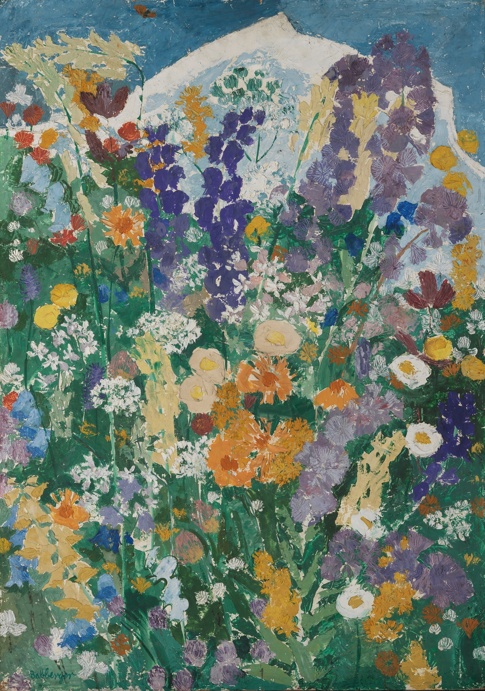
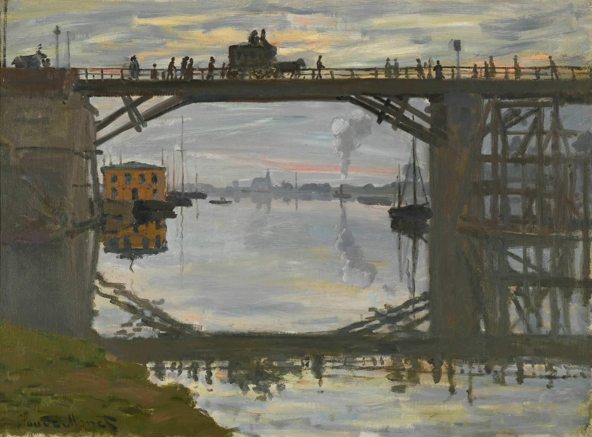
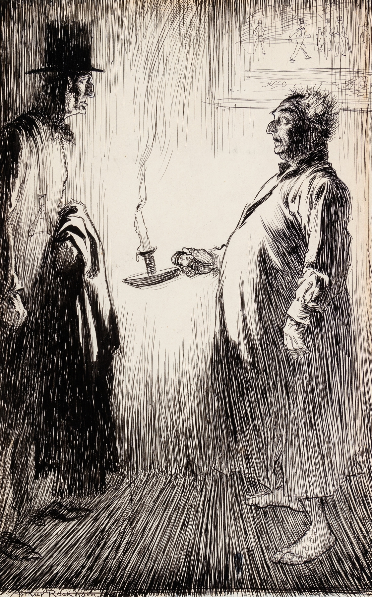
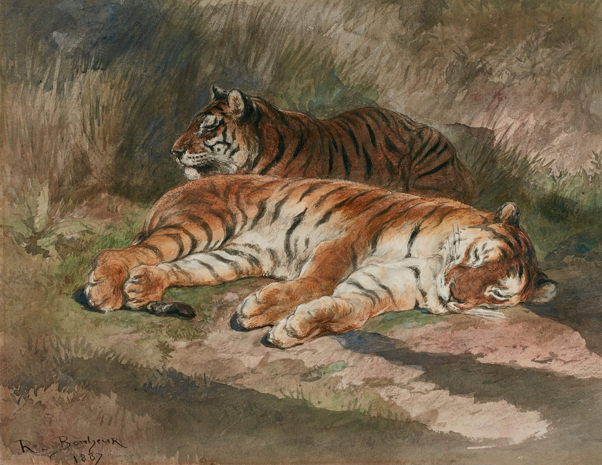
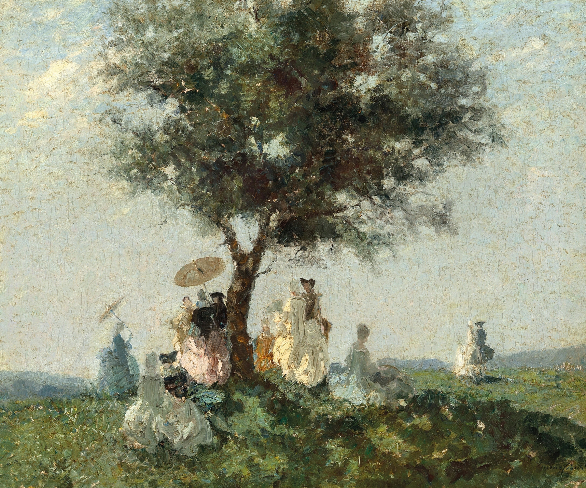
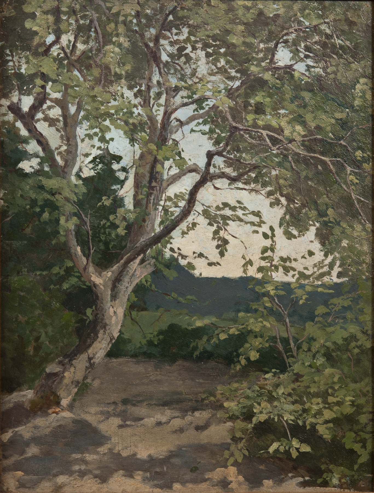

-
Blumen am Berg
August Babberger (German,1885 - 1936)
August Babberger was a German painter. He was one of the protagonists of Expressionism and one of the most important artistic personalities of Classical Modernism in southwest Germany. Nevertheless, he is one of the almost forgotten artists of the early 20th century. The son of a carpenter, August Babberger was born in Hausen im Wiesental in 1885. He spent his most important school years in Basel, where his parents moved in 1895. His talent for painting was noticed early on at secondary school. He later became an apprentice to a master painter. The young journeyman painter then traveled widely. In Munich, he tried to get into the art academy, but failed. In 1908, Babberger worked as a painter in Karlsruhe. His meeting with Hans Thoma there, to whom he showed his pen and ink drawings, was decisive. Thoma advised the 23-year-old to stay in Karlsruhe and study at the academy there. Babberger attended the etching class and received a scholarship to the International Art School in Florence the following year through Thoma's mediation. Babberger spent two winters there, painting and drawing mainly nudes. During these years, it was particularly important for him to gain the personal, lifelong friendship of the Graubünden painter Augusto Giacometti in addition to his artistic training. In addition to his interest in modern mural art, his search for the original in nature led him to discover pure landscape painting in the Swiss Alps from 1915 onwards. In temporal and spatial proximity to Ernst Ludwig Kirchner, Babberger spent regular summer stays in an alpine hut on the Klausen Pass in the canton of Uri from 1918 onwards. After his marriage to the reverse glass painter and poet Anna Maria Tobler from Lucerne, Babberger moved to Frankfurt am Main. In 1919, he was a founding member of the Darmstadt Secession. In 1920, he was appointed Professor of Decorative Painting at the newly founded Landeskunstschule in Karlsruhe. He was director of this academy from 1923 to 1930. His art was already a bone of contention for some conservatives at this time, and soon after the seizure of power he was defamed as a "degenerate artist" by decree on July 25, 1933 and removed from his teaching position. His colleague and fellow countryman from the Wiesental, the painter Hans Adolf Bühler, who was director of the academy at the time, played an inglorious role in this. Babberger moved to his wife's homeland, Switzerland. Years earlier, Babberger had repeatedly spent his summers on the Klausen Pass in the canton of Uri. It was here that he met the artist Erna Schillig, whom he made his model student and who later became his lover. Babberger created important works of art together with Erna Schillig. Together they painted the Höfli Chapel in Altdorf in 1932 and created the artist's book Vom Urnersee über den Klausenpass with woodcuts by Schillig and texts by Babberger. Schillig and Babberger also wrote the book Das Paradies der Höhensucher. Summer notes from the Klausen Pass. Not yet 51 years old, he died in 1936 in Altdorf, Canton Uri, as a result of neck surgery. Babberger's artistic estate was transferred to Altdorf and thus saved from the threat of seizure by the National Socialists. However, those in power in Germany continued to persecute the painter even after his death. In 1937, nine of his paintings were confiscated from public collections as part of the Nazi "Degenerate Art" campaign.
1921 - 1923 -
Le Pont De Bois
Claude Monet (French,1840-1926)
Oscar-Claude Monet was a French painter and founder of impressionist painting who is seen as a key precursor to modernism, especially in his attempts to paint nature as he perceived it. During his long career, he was the most consistent and prolific practitioner of impressionism's philosophy of expressing one's perceptions before nature, especially as applied to plein air (outdoor) landscape painting. The term "Impressionism" is derived from the title of his painting Impression, soleil levant, exhibited in the 1874 ("exhibition of rejects") initiated by Monet and his associates as an alternative to the Salon. Monet was raised in Le Havre, Normandy, and became interested in the outdoors and drawing from an early age. Although his mother, Louise-Justine Aubrée Monet, supported his ambitions to be a painter, his father, Claude-Adolphe, disapproved and wanted him to pursue a career in business. He was very close to his mother, but she died in January 1857 when he was sixteen years old, and he was sent to live with his childless, widowed but wealthy aunt, Marie-Jeanne Lecadre. He went on to study at the Académie Suisse, and under the academic history painter Charles Gleyre, where he was a classmate of Auguste Renoir. His early works include landscapes, seascapes, and portraits, but attracted little attention. A key early influence was Eugène Boudin who introduced him to the concept of plein air painting. From 1883, Monet lived in Giverny, also in northern France, where he purchased a house and property and began a vast landscaping project, including a water-lily pond. His ambition to document the French countryside led to a method of painting the same scene many times so as to capture the changing of light and passing of the seasons. Among the best known examples are his series of haystacks (1890–91), paintings of the Rouen Cathedral (1894) and the paintings of water lilies in his garden in Giverny that occupied him continuously for the last 20 years of his life. Frequently exhibited and successful during his lifetime, his fame and popularity soared in the second half of the 20th century when he became one of the world's most famous painters and a source of inspiration for burgeoning groups of artists.
1872 -
Candlelight
Arthur Rackham (English, 1867-1939)
Arthur Rackham was an English book illustrator. He is recognised as one of the leading figures during the Golden Age of British book illustration. His work is noted for its robust pen and ink drawings, which were combined with the use of watercolour, a technique he developed due to his background as a journalistic illustrator. Rackham's 51 colour pieces for the Early American tale became a turning point in the production of books since – through colour-separated printing – it featured the accurate reproduction of colour artwork. Some of his best-known works include the illustrations for Rip Van Winkle, Peter Pan in Kensington Gardens, and Fairy Tales of the Brothers Grimm. Rackham was born at 210 South Lambeth Road, Vauxhall, London as one of 12 children. In 1884, at the age of 17, he was sent on an ocean voyage to Australia to improve his fragile health, accompanied by two aunts. At the age of 18, he worked as a clerk at the Westminster Fire Office and began studying part-time at the Lambeth School of Art. In 1892, he left his job and started working for the Westminster Budget as a reporter and illustrator. His first book illustrations were published in 1893 in To the Other Side by Thomas Rhodes, but his first serious commission was in 1894 for The Dolly Dialogues, the collected sketches of Anthony Hope, who later went on to write The Prisoner of Zenda. Book illustrating then became Rackham's career for the rest of his life. By the turn of the century, Rackham had developed a reputation for pen and ink fantasy illustration with richly illustrated gift books such as The Ingoldsby Legends (1898), Gulliver's Travels and Fairy Tales of the Brothers Grimm (both 1900). This was developed further through the austere years of the Boer War with regular contributions to children's periodicals such as Little Folks and Cassell's Magazine. In 1901 he moved to Wychcombe Studios near Haverstock Hill, and in 1903 married his neighbour Edyth Starkie. Edith suffered a miscarriage in 1904, but the couple had one daughter, Barbara, in 1908. Although acknowledged as an accomplished black-and-white book illustrator for some years, it was the publication of his full colour plates to Washington Irving's Rip Van Winkle by Heinemann in 1905 that particularly brought him into public attention, his reputation being confirmed the following year with J.M.Barrie's Peter Pan in Kensington Gardens, published by Hodder & Stoughton. Income from the books was greatly augmented by annual exhibitions of the artwork at the Leicester Galleries. Rackham won a gold medal at the Milan International Exhibition in 1906 and another one at the Barcelona International Exposition in 1912. His works were included in numerous exhibitions, including one at the Louvre in Paris in 1914. From 1906 the family lived in Chalcot Gardens, near Haverstock Hill, until moving from London to Houghton, West Sussex in 1920. In 1929 the family settled into a newly built property in Limpsfield, Surrey. Arthur Rackham died in 1939 of cancer at his home.
unknown -
Seascape, Guarujá

Aurélio Figueredo (Brazilian,1850 - 1899)
José Ferraz de Almeida Júnior, commonly known as Almeida Júnior, was a Brazilian artist and designer; one of the first there to paint in the Realistic tradition of Gustave Courbet and Jean-François Millet. The "Dia do Artista Plástico" (Day of Fine Artists in Brazil) is celebrated on his birthday. He was born in Itu. His art career began while he was working as a bell-ringer at the Church of Our Lady of Candelária in his native town. Some small works Júnior created on religious themes impressed the head priest enough to hold a fundraiser for him so he could go to Rio de Janeiro for formal art lessons. In 1869, he enrolled at the Academia Imperial de Belas Artes (Imperial Academy of Fine Arts), where he studied with Victor Meirelles and Pedro Américo. His simple country speech and manners made him stick out among the rest of the students, who were all from more urban areas. After graduating, he chose not to compete for a travel award to Europe, instead returning to Itu and setting up a studio there. During a tour of the São Paulo region in 1876, Emperor Pedro II saw Júnior's work and liked it. He personally offered Júnior his financial support. Later that year, Pedro II's royal decree awarded Júnior 300 francs per month for the purpose of studying in Paris. He soon settled in Montmartre and enrolled at the École des Beaux-Arts, becoming one of the many students of Alexandre Cabanel. While there, he participated in four of the Salons. He remained in Paris until 1882. Then, after a brief trip to Italy, he returned to Brazil and exhibited the works he had created during his absence. In 1883, he opened a studio in São Paulo and taught art privately. He also held exclusive art exhibitions and fulfilled commissions for portraits of notable people ranging from coffee barons to Republican politicians. In 1884, he held a showing at the Exposição Geral de Belas Artes and was made a knight of the Order of the Rose. A year later, Victor Meirelles, wanting to retire, offered Júnior his position as professor of history painting at the Imperial Academy of Fine Arts, but Júnior refused the offer because he preferred to stay in São Paulo. From 1887 to 1896, he made three more trips to Europe. He increasingly rejected Biblical and historical subjects in favor of regionalist themes, depicting the everyday life of the caipiras while moving from academic style to Naturalism. Despite these changes, his reputation at the Imperial Academy remained unchallenged, and he received its Gold Medal in 1898. Júnior was stabbed to death in 1899 by his cousin José de Almeida Sampaio in Piracicaba in front of the Hotel Central. Júnior had been having a long-standing affair with Sampaio's wife, Maria Laura do Amaral Gurgel, who had briefly been engaged to Júnior, and Sampaio had just found out about it.
unknown -
Two Recumbent Tigers
Rosa Bonheur (French, 1822 - 1899)
Rosa Bonheur, born Marie-Rosalie Bonheur, was a French artist, mostly a painter of animals (animalière) but also a sculptor, in a realist style. Her paintings include Ploughing in the Nivernais, first exhibited at the Paris Salon of 1848, and now at the Musée d'Orsay in Paris, and The Horse Fair (in French: Le marché aux chevaux), which was exhibited at the Salon of 1853 (finished in 1855) and is now in the Metropolitan Museum of Art, in New York City. Bonheur was widely considered to be the most famous female painter of the nineteenth century. Bonheur was born on 16 March 1822 in Bordeaux, Gironde, the oldest child in a family of artists. Her mother was Sophie Bonheur (born Marquis), a piano teacher; she died when Rosa was eleven. Her father was Oscar-Raymond Bonheur, a landscape and portrait painter who encouraged his daughter's artistic talents. Though of Jewish origin, the Bonheur family adhered to Saint-Simonianism, a Christian-socialist sect that promoted the education of women alongside men. Bonheur's siblings included the animal painters Auguste Bonheur and Juliette Bonheur, as well as the animal sculptor Isidore Jules Bonheur. Francis Galton used the Bonheurs as an example of "Hereditary Genius" in his 1869 essay of the same title. Bonheur moved to Paris in 1828 at the age of six with her mother and siblings, after her father had gone ahead of them to establish a residence and income there. By family accounts, she had been an unruly child and had a difficult time learning to read, though she would sketch for hours at a time with pencil and paper before she learned to talk. Her mother taught her to read and write by asking her to choose and draw a different animal for each letter of the alphabet. The artist credited her love of drawing animals to these reading lessons with her mother. At school she was often disruptive, and was expelled numerous times. After a failed apprenticeship with a seamstress at the age of twelve, her father undertook her training as a painter. Her father allowed her to pursue her interest in painting animals by bringing live animals to the family's studio for studying. Following the traditional art school curriculum of the period, Bonheur began her training by copying images from drawing books and by sketching plaster models. As her training progressed, she made studies of domesticated animals, including horses, sheep, cows, goats, rabbits and other animals in the pastures around the perimeter of Paris, the open fields of Villiers near Levallois-Perret, and the still-wild Bois de Boulogne. At fourteen, she began to copy paintings at the Louvre. Among her favorite painters were Nicolas Poussin and Peter Paul Rubens, but she also copied the paintings of Paulus Potter, Frans Pourbus the Younger, Louis Léopold Robert, Salvatore Rosa and Karel Dujardin. She studied animal anatomy and osteology in the abattoirs of Paris and dissected animals at the École nationale vétérinaire d'Alfort, the National Veterinary Institute in Paris. There she prepared detailed studies that she later used as references for her paintings and sculptures. During this period, she befriended the father-and-son comparative anatomists and zoologists, Étienne Geoffroy Saint-Hilaire and Isidore Geoffroy Saint-Hilaire. Rosa was also an open lesbian "first living with partner Nathalie Micas for over 40 years and then, after Micas' death, forging a relationship with American painter Anna Elizabeth Klumpke. By living her life openly in an era when lesbianism was disparaged by the government, Bonheur staked her claim as a groundbreaking individual both in her career and her personal life". A French government commission led to Bonheur's first great success, Ploughing in the Nivernais, exhibited in 1849 and now in the Musée d'Orsay in Paris. Her most famous work, the monumental The Horse Fair, was completed in 1855 and measured eight feet high by sixteen feet wide. It depicts the horse market held in Paris, on the tree-lined boulevard de l'Hôpital, near the Pitié-Salpêtrière Hospital, which is visible in the painting's background. There is a reduced version in the National Gallery in London. This work led to international fame and recognition; that same year she traveled to Scotland and met Queen Victoria en route, who admired Bonheur's work. In Scotland, she completed sketches for later works including Highland Shepherd, completed in 1859, and A Scottish Raid, completed in 1860. These pieces depicted a way of life in the Scottish highlands that had disappeared a century earlier, and they had enormous appeal to Victorian sensibilities. Bonheur exhibited her work at the Palace of Fine Arts and The Woman's Building at the 1893 World's Columbian Exposition in Chicago, Illinois. Though she was more popular in England than in her native France, she was decorated with the French Legion of Honour by the Empress Eugénie in 1865, and was promoted to Officer of the order in 1894. She was the first female artist to be given this award. Bonheur was represented by the art dealer Ernest Gambart (1814–1902). In 1855 he brought Bonheur to the United Kingdom, and he purchased the reproduction rights to her work. Many engravings of Bonheur's work were created from reproductions by Charles George Lewis (1808–1880), one of the finest engravers of the day. In 1859 her success enabled her to move to the Château de By near Fontainebleau, not far from Paris, where she lived for the rest of her life. The house is now a museum dedicated to her. Women were often only reluctantly educated as artists in Bonheur's day, and by becoming such a successful artist she helped to open doors to the women artists that followed her. Bonheur can be viewed as a "New Woman" of the 19th century; she was known for wearing men's clothing, but she attributed her choice of trousers to their practicality for working with animals (see Rational dress). In her romantic life, she was fairly openly a lesbian; she lived with her first partner, Nathalie Micas, for over 40 years until Micas' death, and later began a relationship with the American painter Anna Elizabeth Klumpke. At a time when lesbian sex – particularly tribadism – was regarded as animalistic and deranged by most French officials, Bonheur's outspokenness about her personal life was groundbreaking. In a world where gender expression was policed, Rosa Bonheur broke boundaries by deciding to wear pants, shirts and ties. She did not do this because she wanted to be a man, though she occasionally referred to herself as a grandson or brother when talking about her family; rather, Bonheur identified with the power and freedom reserved for men. Wearing men's clothing gave Bonheur a sense of identity in that it allowed her to openly show that she refused to conform to societies' construction of the gender binary. It also broadcast her sexuality at a time where the lesbian stereotype consisted of women who cut their hair short, wore pants, and chain-smoked. Rosa Bonheur did all three. Bonheur never explicitly said she was a lesbian, but her lifestyle and the way she talked about her female partners suggests this. Until 2013 women in France were forbidden from wearing trousers by the “Decree concerning the cross-dressing of women” which was implemented on 17 November 1800. Bonheur in 1852 had to ask permission from the police to wear trousers, as this was her preferred attire to go to the sheep and cattle markets to study the animals she painted. Bonheur, while taking pleasure in activities usually reserved for men (such as hunting and smoking), viewed her womanhood as something far superior to anything a man could offer or experience. She viewed men as stupid and mentioned that the only males she had time or attention for were the bulls she painted. Having chosen to never become an adjunct or appendage to a man in terms of painting, she decided she would be her own boss and that she would lean on herself and her female partners instead. She had her partners focus on the home life while she took on the role of breadwinner by focusing on her painting. Bonheur's legacy paved the way for other lesbian artists who didn't favour the life society had laid out for them. Bonheur died on 25 May 1899, at the age of 77, at Thomery (By), France. She was buried together with Nathalie Micas (1824 – 24 June 1889), her lifelong companion, at Père Lachaise Cemetery, Paris. Klumpke was Bonheur's sole heir after her death, and later joined Micas and Bonheur in the same cemetery upon her death. Many of her paintings, which had not previously been shown publicly, were sold at auction in Paris in 1900.
1887 -
The Picknick
Emma Ciardi (Italian, 1879 - 1933)
Emma Ciardi was an Italian painter. Ciardi was born in Venice. Following in the footsteps of her father Guglielmo and brother Beppe, Emma Ciardi began painting as an adolescent and exhibited for the first time in 1900 at the Exposition Universelle in Paris, and at the Promotrice in Turin; in 1903 she participated in the Esposizione Internazionale d’Arte di Venezia and took part in it almost every year after that until 1932. In addition to her landscapes and views of Venice, she also soon made a name for herself with neo-18th-century subjects which were particularly well received by the English and American public. In 1910 she organised her first solo exhibition at the Leicester Galleries in London, followed by a second in 1913; she also had other exhibitions mounted in London by the Fine Art Society in 1928 and 1933. In the USA market she received acclaim from 1923 onwards, when she exhibited at the Howard Young Gallery in New York City, which obtained exclusive rights to selling her work. She died in Venice in 1933. Two years after her death, Ciardi’s painting was celebrated in a retrospective on the occasion of the fortieth anniversary of the Venice Biennale.
1923 -
A Tree. Study
Anna Nordlander (Swedish, 1843 - 1879)
Anna Catharina Nordlander, was a Swedish painter. She is known for her portraits and her depictions of genre- nature- and folk life: she is also counted as a pioneer in the illustration of the lives of the Forest Sami (Skogssamar) of northern Sweden. Anna Nordlander was born in the vicarage at Skellefteå in Västerbotten County, Sweden to Nils Nordlander (1796–1874) and Anna Maria Gestrin. Her father was parish vicar and in 1841 among the founders of the town of Skellefteå. She studied at the Royal Swedish Academy of Arts (1866) under Jean-François Portaels in Brussels and at the Académie Julian in Paris. Nordlander is represented in several Swedish museums including the Nationalmuseum in Stockholm. She was not particularly acknowledged until the late 20th-century. Her artistic pursuit first attracted broader attention posthumously. Nordlander died in Härnösand at 36 years old.
unknown